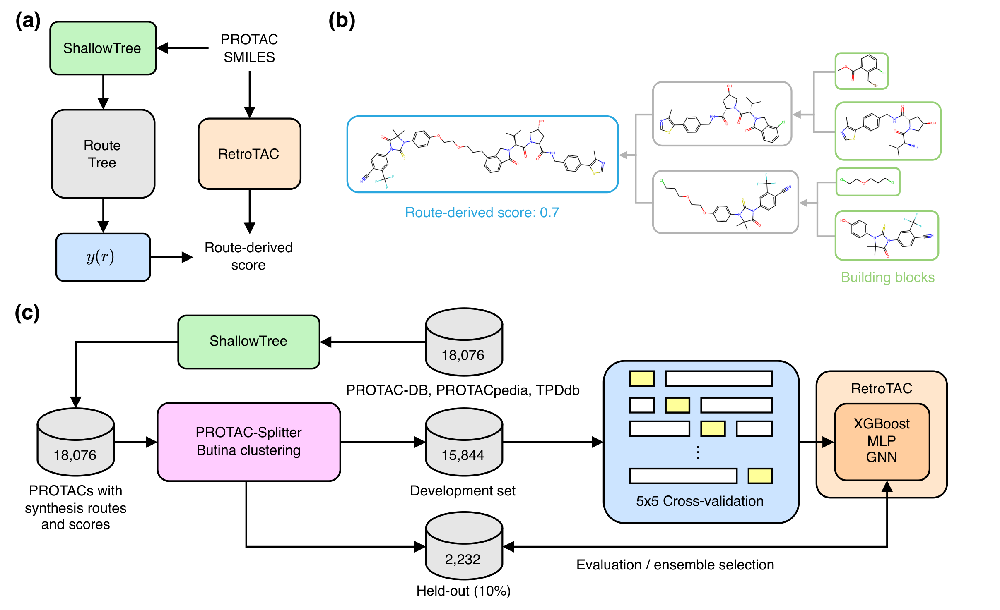
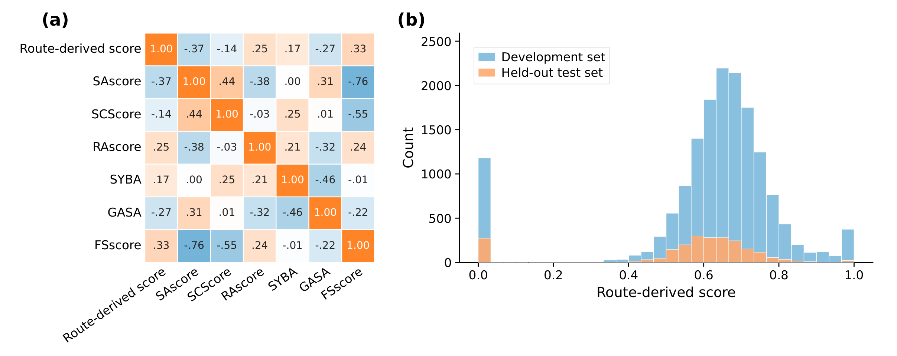
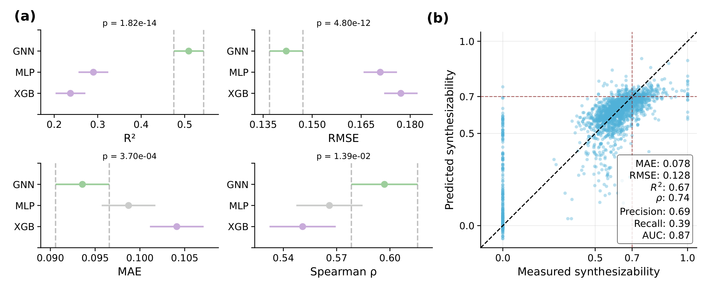
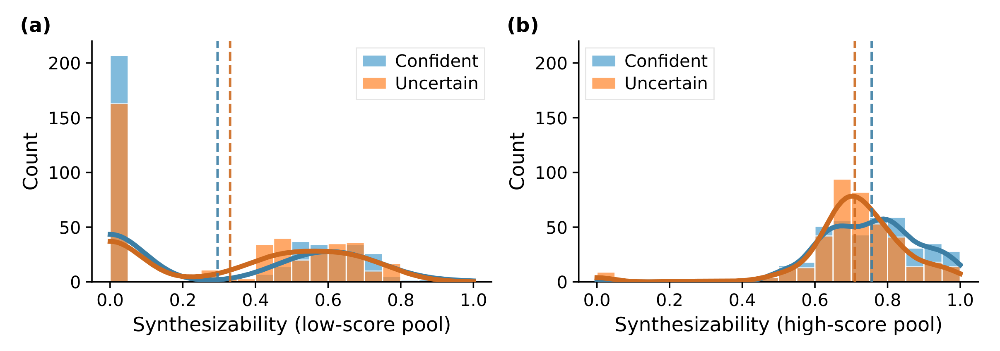

RetroTAC：学习模块化路线评分，快速优选 PROTAC 合成候选
论文原文 ↗论文：RetroTAC: Learning Route-Derived Synthetic Accessibility for PROTACs，Stefano Ribes 等，2026。arXiv｜｜作者代码与数据
分子很大，组装路线却可能很短
PROTAC 由靶蛋白结合配体、连接链和 E3 泛素连接酶配体组成，将靶蛋白拉近降解系统，为传统抑制之外的药物设计提供途径。模块组合使候选空间迅速扩大，也产生大型、多官能团的结构，给合成筛选带来挑战。
常见小分子合成可及性分数会惩罚结构复杂度，却容易忽略已有复杂模块通过少数偶联完成组装的情况。逆合成规划能给出具体路线，但为大量 PROTAC 逐一搜索很昂贵。RetroTAC 因此先定义面向模块组装的可解释路线评分，再训练结构代理模型，使虚拟库先快速排序，将明确路线规划留给优选候选。
怎样把路线变成学习标签
输入是一条 PROTAC 的 SMILES，即原子连接关系的字符串。作者从 PROTAC-DB、PROTACpedia 和 TPDdb 整理结构，用 ShallowTree 生成逆合成树，形成 18,076 个带路线标签的建模样本。规划从目标向前体递归拆分，以 eMolecules 可购买原料为终点，在最大深度 12、每分子最多 30 分钟的设置下搜索。
路线树提供两个用于评分的量。深度 D 是最长连续合成分支的步数，反映目标需要经过多少级顺序反应；片段均衡度 B 在每个双分子拼接步骤中，计算较小前体与较大前体的重原子数之比，再取平均。两个大小相近的模块相接，均衡度较高；在大中间体上连续添加小片段，比例较低。
作者将二者等权组合：
\[ y(r)=\frac12\left[\max\left(0,1-\frac{D(r)-1}{10}\right)+B(r)\right]. \]
深度项在 D=1 时为 1，达到 11 时降至 0；因此较短、较均衡的路线得分较高。目标已在库存中记为 1，搜索未到达库存记为 0。图 1b 的目标由两个分别准备的中间体汇合，路线得分为 0.7，直观体现了模块化组装与评分的关系。

原图 Fig.1。a 以规划路线产生标签，再学习结构到分数的映射；b 是模块汇合的路线例子；c 连接数据库、划分、三类模型和集成选择。
这套评分只使用路线拓扑和重原子数，便于解释某个候选为何较高或较低。它与基于片段频率、结构复杂度或规划成功分类的旧分数有较弱排序相关，显示其着重捕捉了路线深度与模块平衡这两种信息。

原图 Fig.2。a 比较路线分数与常用指标的排序相关；b 展示开发集与留出集的标签分布。路线评分在连续区间内区分不同组装方式。
从分子结构直接预测路线分数
作者比较 XGBoost、MLP 和图神经网络 GNN。XGBoost 组合决策树，MLP 逐层变换固定长度向量，两者输入 Morgan 分子指纹及二维分子描述符；指纹编码原子周围的连接片段，描述符补充分子大小与组成等特征。GNN 直接读取分子图，沿化学键传递原子信息，再形成整体表示，并由 CheMeleon 预训练模型初始化后微调。
训练先用指纹聚类隔离留出分子，开发集再按靶蛋白配体骨架分组做重复交叉验证。骨架保留分子的环与主要连接框架，这样同组靶蛋白配体进入同一划分，模型需要利用局部化学和组装特征学习分数。
三种架构各训练 25 个成员，再以贪心方法逐次选入能改善预测的成员，最终组成含 13 个 GNN、7 个 MLP 和 7 个 XGBoost 的 RetroTAC 集成。使用时，各成员从新分子的结构预测分数，集成均值用于排序，成员之间的标准差提示预测分歧。优选分子随后进入显式规划，取得可查看的中间体、反应和原料树。
互补模型提高预测质量
按靶蛋白配体分组的交叉验证中，GNN 的平均 RMSE 为 0.142，优于 MLP 的 0.171 和 XGBoost 的 0.177。RMSE 是预测与路线标签差值的均方根，越低表示对标签的复现更准确。
进一步在共同留出子集比较，最佳单 GNN 的 RMSE 为 0.1378、R² 为 0.616；贪心集成为 0.1320、0.647，约为摘要报告的 0.13 与 0.65。R² 衡量模型解释标签变化的程度。集成利用图表示、指纹与描述符模型的互补，提高整体预测质量。

原图 Fig.3。a 比较三类模型的回归和排序表现；b 将集成预测与从路线计算的标签对应。对角线表示一致，红色虚线标出高分划分阈值。
高分候选更容易得到短而均衡的规划路线
作者在 1,303,154 个由靶蛋白配体、连接链和 E3 配体重组得到的候选上使用 RetroTAC。根据成员分歧分成两池，每池各取最高和最低分的 400 个，共 1,600 个候选，再由 ShallowTree 规划并重新计算路线评分。
合并两种分歧水平，高分组平均路线评分为 0.733，低分组为 0.313；在测试搜索设置下，完整路线解决率分别为 98.75% 和 51.00%。高分且成员较一致的组有 399/400 个目标得到完整路线，平均深度 2.17，均衡度 0.633；低分且较一致的组相应为 193/400，平均深度 3.45，均衡度 0.471。预测排序由此富集了规划更易解决、顺序步骤更少且模块拼接更均衡的候选。

原图 Fig.4。a 为预测低分尾部，b 为预测高分尾部；横轴是随后由规划路线重新计算的分数，虚线标记各组均值。高分组分布整体右移。
RetroTAC 把结构筛选与可解释路线特征连接起来：先用较昂贵的规划建立标签，再将这种信息压缩为直接读取分子结构的快速模型。对于模块化 PROTAC 虚拟库，研究者可以先按短路线与均衡拼接的偏好缩小范围，再对选中候选展开显式规划与路线分析，使合成评估资源更集中。
原始摘要完整中文翻译
蛋白水解靶向嵌合体（PROTAC）能够实现靶向蛋白降解，将治疗机会拓展到传统抑制之外。然而，组装其大型、多功能的分子结构会带来合成挑战，从而阻碍其发现。传统的合成可及性评分可能高估这种困难，因为它们惩罚 PROTAC 的分子复杂度，却忽略了从易获得的构筑单元出发进行模块化组装的可能性。相比之下，逆合成规划工具能够提供明确路线，但计算开销很大，尤其是在处理大分子时。本文提出一种可由人理解、面向 PROTAC 的路线衍生评分，奖励较短的合成深度和均衡的分子片段拼接；同时提出 RetroTAC，一种能够直接从分子结构预测这一评分的机器学习代理模型。RetroTAC 通过集成组合互补模型，在留出分子上实现了 0.13 的均方根误差和 0.65 的 R²。我们进一步在通过重组靶蛋白配体、连接链和 E3 连接酶配体而枚举的 PROTAC 上评估其用途，随后进行逆合成规划和路线分析。按较高预测分数选出的候选，其平均路线衍生可合成性为 0.73，而低分候选为 0.31；在所测试的搜索设置下，两者分别有 98.75% 和 51.00% 得到完整解决。这些结果支持将 RetroTAC 用作虚拟 PROTAC 库的快速优先排序工具，在分子筛选与可解释的路线特征之间建立联系，同时将显式规划保留给选定候选。